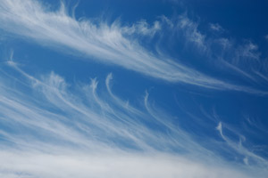

Cumulus
Cumulus clouds are big and fluffy like cotton candy. This type of cloud can expand and turn into thunderclouds. Smaller versions of this cloud indicate fair weather. This type of cloud is relatively close to the ground.
Stratus
Stratus clouds look like a stitched blanket of clouds stretched across the sky. They are very flat and usually mean a rainy day or overcast.
Cirrus
Cirrus clouds are actually so high up in the sky that they are made of ice particles. The ice gives them a feathery light look. Usually they mean the weather will be nice!